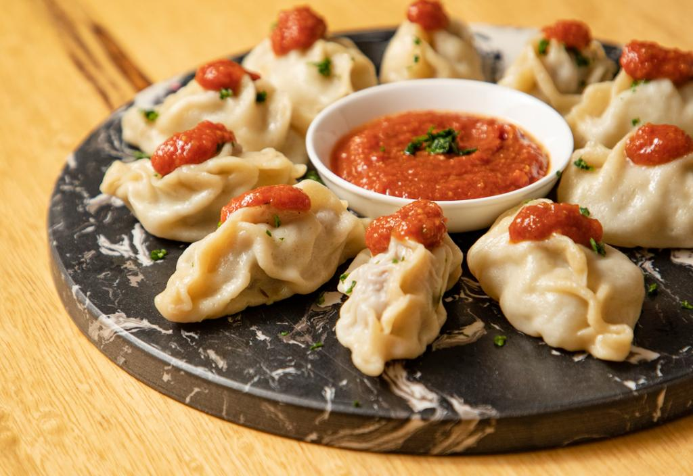

Manto

Mantu Recipe - Afghan Dumpling
The mantu is a thin dough that is filled with beef or lamb mixed in onions and spices.
The steamed foodstuff then tops it off with an orange sauce made from chaka (thick creamy strained yogurt), giving this dish its unique taste!
Ingredients:
Meat Ingredients:
- 1 Lb Ground Lamb (can use beef)
- 2 Cups finely diced onions
- 1 spicy green chili
- 2 tsp salt
- 1 Tablespoon of ground coriander
- 1 Tablespoon of ground cumin
- 1 teaspoon of black pepper
Dough Ingredients:
- 3 Cups All-Purpose Flour
- 2 Tablespoons Vegetable Oil
- 2 Teaspoons of Salt
- 1.25 Cups of Water (Customize to your flour and weather conditions)
Sauce Ingredients:
- 1 Tablespoon of vegetable oil
- 1/4 Cup finely diced onion
- 1 8 oz can tomato sauce
- 1 Tablespoon white vinegar
- 1 tsp garlic powder
- 1 tsp black pepper
- salt to taste
Steps:
Dough:
- Add flour, salt, and oil to the mixer bowl.
- Next, start your mixer slowly and slowly add water. Don't rush it. (Alternatively, you can knead by hand and slowly add water as you go)
- After that, you will have to start trusting your eye. You have to let the water incorporate with your dry ingredients. You can eventually turn the mixer on high.
- After a few minutes, you should notice the dough coming together. It will start to look like a stretchy piece of dough and will begin to grab your dough hook.
- Want to knead by hand for about 6-7 minutes—mixer about 4.
- Even if using a mixer, I like to take the dough out and onto a flour surface and hand knead a few minutes to make sure the dough is firm.
Sauce:
- Add oil to pan.
- After the oil is heated, add onion. Sautee onion for about 2 minutes.
- Then, add tomato sauce and spices. Stir and simmer for an additional 5 minutes.
- Finally, add vinegar, cook for 2 minutes, set aside.
Filling:
Assembly of Dumplings:
- Mix meat ingredients from above until thoroughly combined. This will take several minutes.
- Divide dough into four pieces.
- Next, roll out one portion of dough until it is about almost see-through. It should be rolled into a rectangular shape. It should be pretty thin if you don't mind a thicker or chewier dough (and I don't :), get it to where you can barely see the surface underneath.
- As an alternative step to rolling it out entirely by hand and with a roller, you can use a pasta machine attachment.
- Next, use a knife or pizza cutter and divide the rolled-out dough into equal-sized squares.
- Once that is done, put a scoop of filling into the center of one square. For the folding method, take opposite corners and pinch them together. (Watching the video is critical for this) This is the easiest way.
- Next, grease steamer basket place dumplings in the greased steamer basket. Cover steamer basket and let steam for approximately 30-35 minutes.
- Finally, to serve, place the dumpling on a platter top with the reheated tomato sauce, our yogurt sauce, and garnish with cilantro.
Home